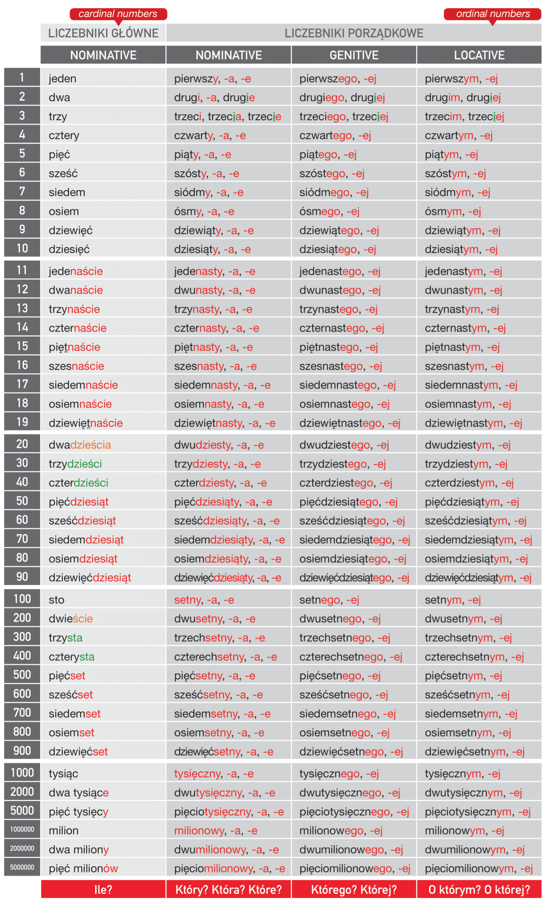

🔢 Liczby i ich przypadki
Poniżej znajduje się tabela przedstawiająca liczby od 1 do 5 milionów wraz z formami w mianowniku, dopełniaczu i miejscowniku, a także liczebnikami porządkowymi.
💬 Приклад: To mój pierwszy telefon — Це мій перший телефон
💬 Приклад: Pierwszego czerwca jest dzień dziecka — Першого червня день дитинни
💬 Приклад: Na zawodach byłem na czwartym miejscu — На змаганнях був на четвертому місці